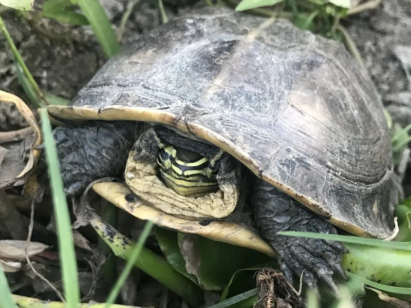

東南アジア広域に分布するCuoraハコガメ。半水棲傾向が強い。CITES II掲載。

1年後の甲長は12〜16cm程度。Cuora amboinensisとも呼ばれる種で、アジア産ハコガメの中では比較的水場を好む傾向がある。熱帯の湿地・水田・川辺に生きる雑食種で、水中でも活発に動く姿が観察できる。食性は幅広く、魚・昆虫・野草・果実を食べる。
10年後は甲長18〜22cm、重さ800g〜1.5kg程度が多い。他のCuoraより大型になりやすい傾向があり、90〜120cmケージへの移行を見込んだ計画が必要。20〜50年の寿命を持つ長期飼育種。
マレーハコガメはアジア産Cuoraの中でも水場の利用頻度が高い種で、水場が狭いと本来の行動が見られず、長期的にストレスが蓄積しやすい傾向がある。「閉じる甲羅＝陸棲」というイメージを持ち込まず、「半水棲に近いアジア産ハコガメ」として水場を充実させた環境設計をすることが安定飼育につながりやすい。
マレーハコガメはMalayan Box Turtleとして知られるCITES II掲載の中〜上級者向け種です。
テラリウムに浅い水場を設置し、陸場を広めに確保してください。温湿度計で常時モニタリングすることを推奨します。
← 横にスクロールできます
| 種名 | 甲長 | 難易度 | 必要環境 | 特徴 |
|---|---|---|---|---|
| マレーハコガメ このページ | M（18〜20cm） | 中〜上級 | 60cmテラリウム | 本種 |
| スペングラーヤマガメ | 10〜14cm | 中〜上級 | 60cm〜 | 小型・アジア産 |
| ヒラセガメ | 15〜20cm | 上級 | 60cm〜 | 日本固有 |
| トウブハコガメ | 15〜20cm | 中〜上級 | 60cm〜 | 北米定番 |